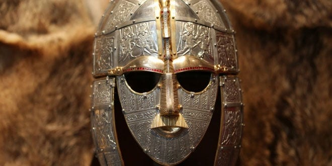

OK, so here we go!
English is a West Germanic language that originated from Anglo-Frisian languages brought to Britain in the mid 5th to 7th centuries AD by Anglo-Saxon migrants from what is now northwest Germany, southern Denmark and the Netherlands. The Anglo-Saxons settled in the British Isles from the mid-5th century and came to dominate the bulk of southern Great Britain. Their language, now called Old English, originated as a group of Anglo-Frisian languages which were spoken, at least by the settlers, in England and southern and eastern Scotland in the early Middle Ages, displacing the Celtic languages (and, possibly, British Latin) that had previously been dominant. Old English reflected the varied origins of the Anglo-Saxon kingdoms established in different parts of Britain. The Late West Saxon dialect eventually became dominant. A significant subsequent influence on the shaping of Old English came from contact with the North Germanic languages spoken by the Scandinavian Vikings who conquered and colonized parts of Britain during the 8th and 9th centuries, which led to much lexical borrowing and grammatical simplification. The Anglian dialects had a greater influence on Middle English.
I am going to talk about the british culture, because for me is more interesting than the american culture.
The most popular drink in the UK is Tea, they have several types of tea for instance, black tes, strawberry tea, green tea...
This has a historical meaning because the tea arrived to the UK in 17th century, but it doesn´t came popular until the 18th century.
Today it still been popular and they have assinged hours to drink tea, between the lunch and 8pm.
For more information, you can click here if you want
When one thinks of English cuisine, fish & chips will probably be in front of mind. Although this national staple is undeniably delicious, there is a lot more you should try when visiting. England’s climate and location mean that it has a rich and varied natural larder. Expect fresh seasonal produce, seafood, meats and a variety of dairy products. The cuisine is also heavily influenced by England’s colonial past, and arguably you couldn’t get a more English dish than a Tikka Masala. If you’re after a more ‘traditional’ English food experience, be sure to try scones with clotted cream or perhaps a savoury pastry or pie (such as a Cornish pasty).
We are going to see some of the most popular dishes in the UK.

The English have been eating fish and chips since the mid 19th century, and it’s not surprising why. Hearty, cheap and delicious – this meal was readily available to the masses and one of the few foods not subjected to British rationing at wartime. If you’re unclear on the specifics, fish & chips consist of breaded or battered white fish (haddock/cod), served with thick fries and almost always mushy green peas. Grab yourself some at the nearest ‘chippy,’ best eaten with a view of the sea and a dash of lemon for the fish and vinegar for the chips (fries).

There is nothing more quintessentially English than a Sunday family roast. The dish consists of roast vegetables and roast meat like chicken, lamb or beef, served with copious amounts of gravy and Yorkshire pudding. The name and tradition of eating it originated from Sunday church attendance, and not being allowed to eat meat on Fridays. The Sunday roast marked the end of the fast and was also convenient as dinner cooked whilst the family attended the service. Sunday roast is still popular now and is a great way to get the family together for a meal.

The English are staunch believers that breakfast is the most important meal of the day. Nothing says this more than the full English breakfast. Expect eggs (fried, poached, or scrambled), bacon, sausages, black pudding, baked beans, tomatoes and mushrooms, and served with toast or fried bread as well as tea or coffee. It’s also known as a fry-up as most of the ingredients are, well, fried. It definitely sets you up for the day! Different regions in England and the rest of the United Kingdom include variations of the above. Most places also include a less traditional but filling veggie English breakfast option.
Although English may be the dominant language in England, that doesn’t guarantee that you’ll understand who you’re talking to! England is famous for its vast array of characteristic regional accents and dialects. Their existence is owed to the country’s rich past of invasion and colonisation. Cockney, Scouse and Yorkshire accents may be the strongest and most recognisable – but there are over 30 different recognised dialects across the country.